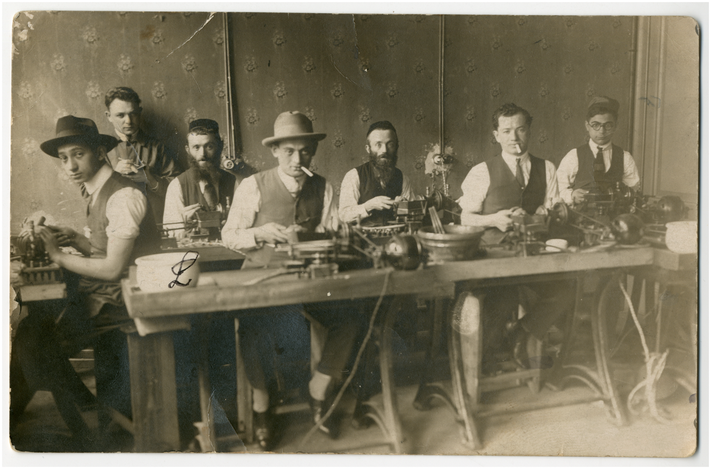
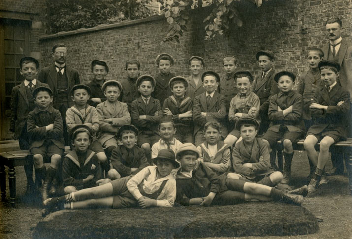
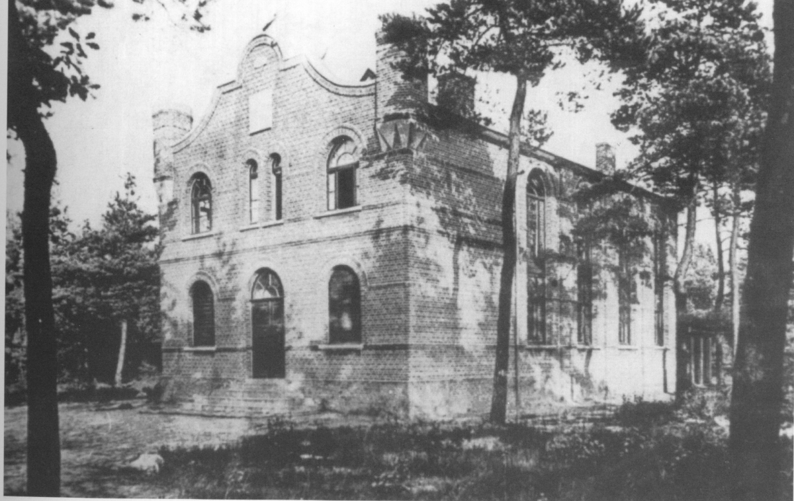

Vooroorlogse periode
Vooroorlogse periode (1918-1939)
Na de Eerste Wereldoorlog ontpopte Antwerpen zich als het belangrijkste centrum van het joodse leven België. Hoewel de oorlog ontwrichting en ontheemding veroorzaakte, werd het interbellum vernieuwd groei van de Joodse bevolking, vooral in Antwerpen, dat Joden uit het Oosten aantrok Europa, maar ook vluchtelingen die op de vlucht zijn voor politieke instabiliteit, economische tegenspoed en opstand antisemitisme elders in Europa.
Tijdens de jaren twintig en dertig groeide de Joodse bevolking van Antwerpen snel en werd een van de grootste van West-Europa. Tegen het einde van de jaren dertig wijzen schattingen erop dat tussen de 35.000 en Alleen al in Antwerpen woonden 50.000 Joden, wat de meerderheid van de Belgische Joden vertegenwoordigde bevolking. De gemeenschap was zeer divers en bestond uit Oost-Europese Asjkenazische joden, al lang bestaande Nederlandse en Duits-joodse families, en kleinere Sefardische groepen.
Economisch gezien speelden joden een centrale rol in de Antwerpse diamantindustrie, die er één van werd de bepalende economische sectoren van de stad. Joodse diamantairs, handelaars en arbeiders waren actief op alle niveaus van de handel, en de industrie trok extra Joodse migratie aan. Verder dan diamanten, Joden waren ook betrokken bij de handel, kleine productie, kleermakerij en maritieme beroepen.

Het religieuze en gemeenschapsleven bloeide tijdens het interbellum. Talrijke synagogen, gebedshuizen en studiekringen waren overal in de stad actief en weerspiegelden een breed scala aan mensen religieuze naleving van orthodoxe tot meer liberale tradities. Grote synagogen zoals de Hollands Synagoge en de Romi Goldmuntz-synagoge centraal kwam te staan Joodse instellingen leven. Joodse scholen boden zowel religieus als algemeen onderwijs, Jesode Hatorah (opgericht in 1895), en Tachkemoni (opgericht 1920), en de jesjiva opgericht in Heide in 1929 - de eerste Talmoedische middelbare school in België. Liefdadigheidsorganisaties, culturele verenigingen en politiek bewegingen – waaronder zionistische, socialistische en religieuze groeperingen – waren actief en goed georganiseerd.

In dezelfde periode ontwikkelde zich in de omgeving ook een belangrijke Joodse gemeenschap wijk van Heide (deel van Kalmthout). Vanaf de jaren twintig werden joden uit Antwerpen aangetrokken Heide zowel als vakantiebezoekers als als permanente bewoners, wat bijdraagt aan de snelle groei en welvaart van het gebied. Tussen 1930 en 1942 waren er minstens 700 geregistreerde joden inwoners van Heide, en nog veel meer bezochten tijdens de weekenden en de zomermaanden. De gemeenschap stichtte de enige synagoge in België buiten een grote stad, gebouwd in 1927-1928, en stichtte in 1929 de yeshiva. Hotels en pensions in Heide zijn speciaal hierop afgestemd Joodse toeristen en inwoners. Deze levendige Joodse aanwezigheid weerspiegelde bredere patronen van mobiliteit binnen de Antwerpse regio tijdens het interbellum.

Ondanks dit levendige gemeenschapsleven brachten de jaren dertig ook toenemende onzekerheid met zich mee. De opkomst van fascisme en nazisme in de buurlanden, gecombineerd met de komst van Joodse vluchtelingen uit Duitsland en Oostenrijk na 1933 namen de spanningen binnen de Belgische samenleving toe. Antisemitisch bewegingen en retoriek werden vooral eind jaren dertig zichtbaarder in Antwerpen, een voorafschaduwing van de gevaren waarmee de Joodse bevolking binnenkort met de uitbraak zou worden geconfronteerd van de Tweede Wereldoorlog.
Referenties
- Schmidt, E. (1994). Geschiedenis van de Joden in Antwerpen. Antwerpen: Excelsior.
- Michman, D. (1998). België en de Holocaust: Joden, Belgen, Duitsers. Jeruzalem: Yad Vashem.
- Saerens, L. (2000). Vreemdelingen in een wereldstad: een geschiedenis van Antwerpen en zijn joodse bevolking (1880-1944). Tielt: Lannoo.
- Vromen, S. (2008). Verborgen kinderen van de Holocaust: Belgische nonnen en hun durf Redding van jonge joden uit de nazi's. Oxford Universiteitspers.